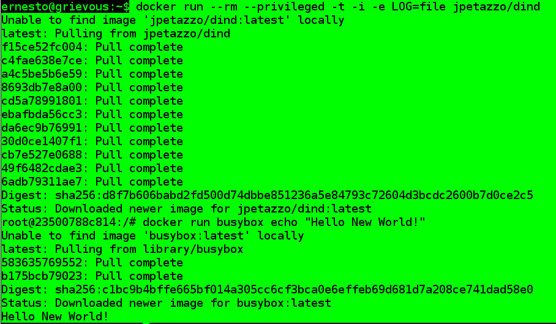

Docker en Docker (DinD)
Posted on mié 27 enero 2016 in Tutorial de Docker • 1 min read

Docker en Docker es simplemente correr un Docker dentro de un contenedor Docker.
El sitio de DinD lo pueden visitar en el siguiente enlace, la imagen docker oficial de DinD la pueden ver en el siguiente enlace.
Lo primero que hay que hacer es correr docker con unas opciones:
docker run --rm --privileged -t -i -e LOG=file jpetazzo/dind
El modo privileged permite negociar algunas características del sistema de archivo.
Luego de iniciar el contenedor se ejecuta otro contenedor esta vez de busyox que devuelve "Hello new World!".
docker run busybox echo "Hello New World!"
A continuación se muestra una figura del resultado de la ejecución.

¡Haz tu donativo! Si te gustó el artículo puedes realizar un donativo con Bitcoin (BTC) usando la billetera digital de tu preferencia a la siguiente dirección: 17MtNybhdkA9GV3UNS6BTwPcuhjXoPrSzV
O Escaneando el código QR desde la billetera: